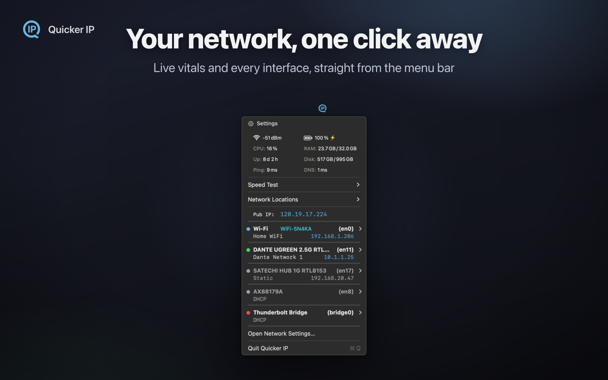
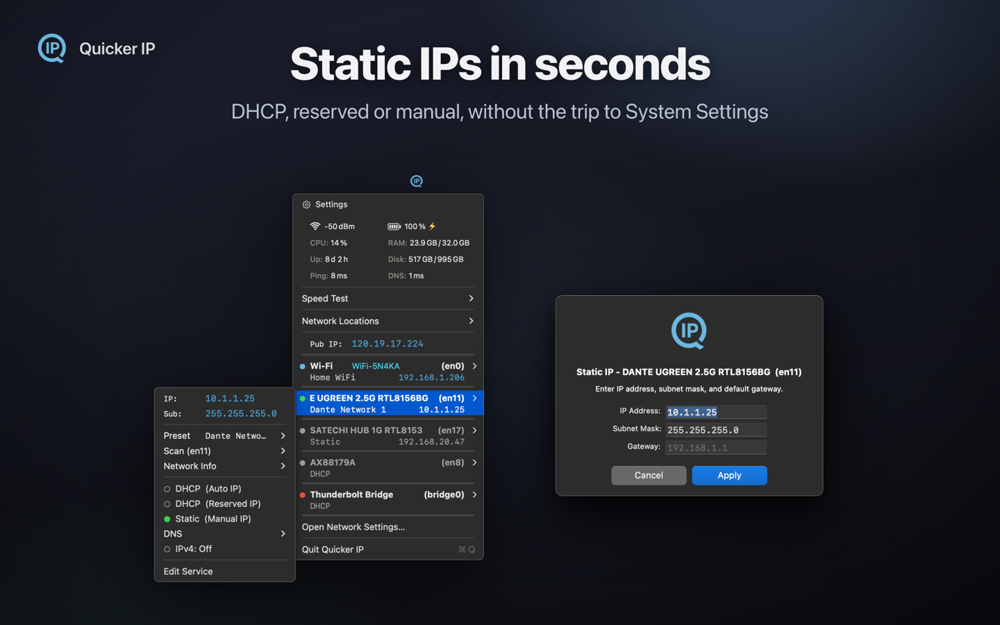
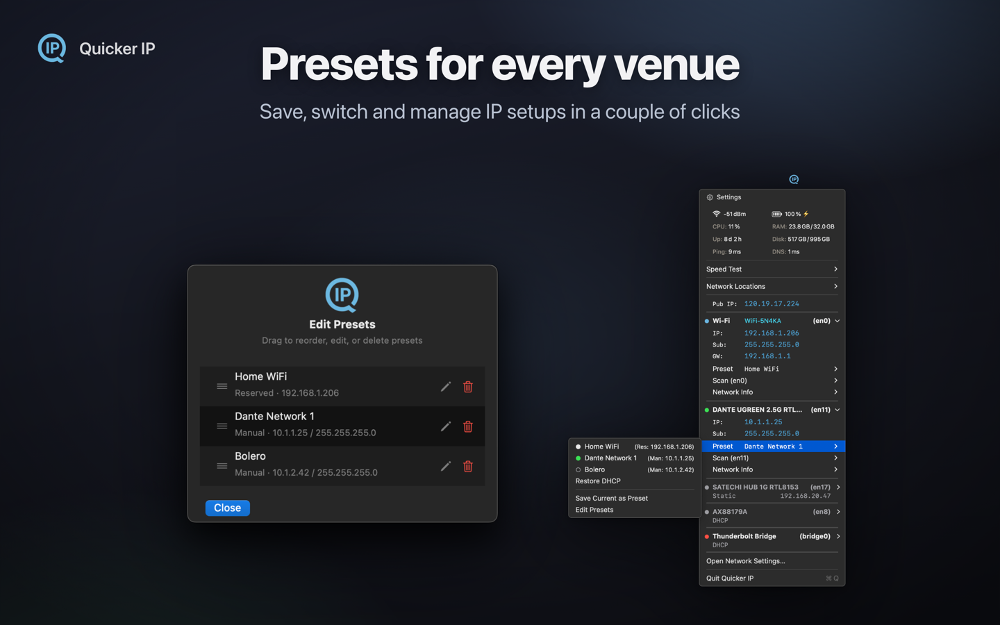
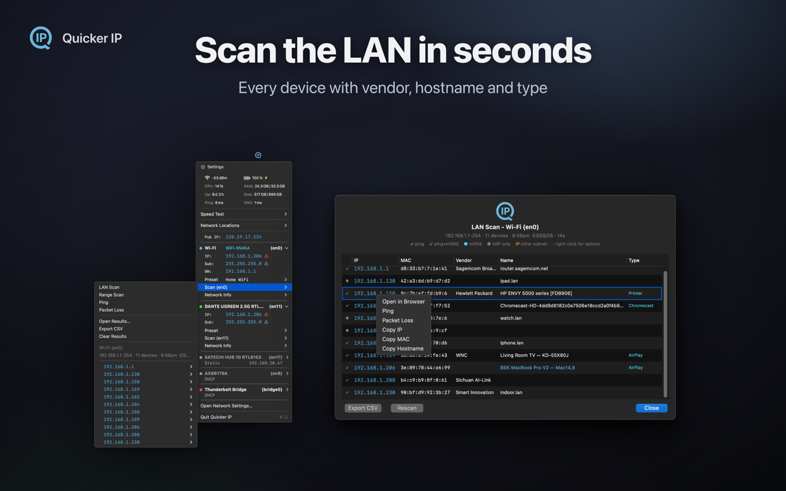
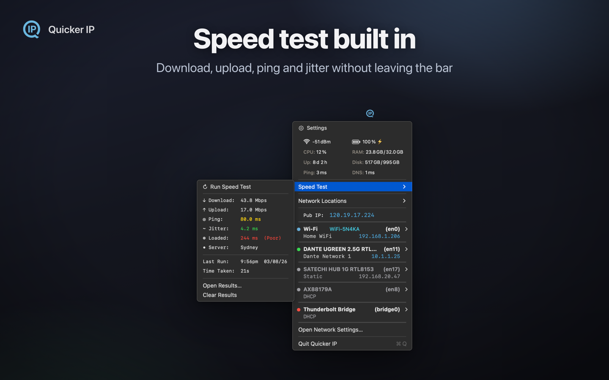
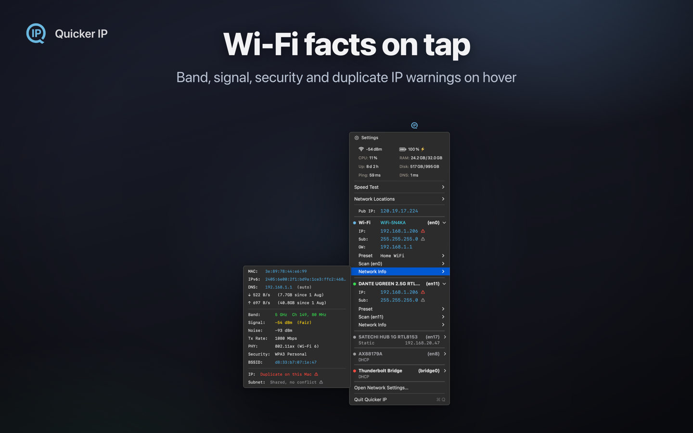
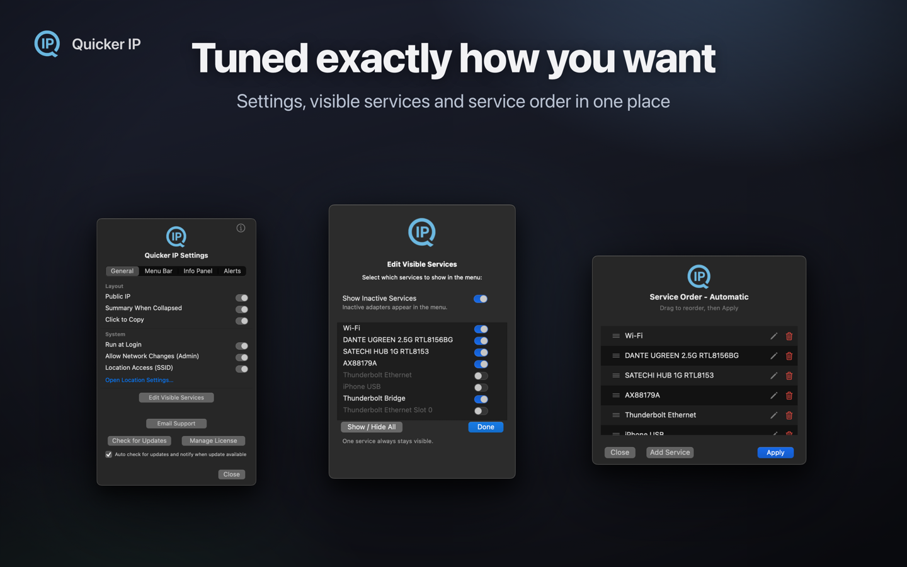

Quicker IP
{{ site.data.content.apps.quickerip.subtitle }}
{{ site.data.content.apps.quickerip.tagline }}
{{ site.data.content.apps.quickerip.description }}

One click
Your whole network, in the menu bar
Live vitals and every interface without opening System Settings. Click any IP, subnet, gateway or MAC to copy it.

Presets
Every rig, one click away
Save, reorder and load IP presets for any device. DHCP, static or DHCP-reserved, per adapter, with your own DNS.

Scanner
Find the device, then hop to it
See every device on the LAN, with vendor lookup. One-click Join puts you on another subnet without touching the adapter settings.

Diagnostics
Prove where the problem is
Speed test, bufferbloat, a live packet-loss monitor, and per-adapter error counters you can clear so only new faults show.

Interface detail
Every fact about every adapter
Band, signal, security, link speed, duplex and MTU on hover, with duplicate IP and subnet-overlap warnings when something is wrong.

Settings
Set it up the way you work
Choose what shows in the menu bar, which adapters appear, and how much detail each one gives you.

Lite vs Pro
| Feature | Pro $18.99 |
Lite Free |
|---|---|---|
| Menu bar IP display | Yes | Yes |
| Click to copy IP / MAC | Yes | Yes |
| IP configuration (DHCP / Static / Presets) | Yes | - |
| Network scanner + Join Subnet | Yes | - |
| Speed test | Yes | - |
| Network Locations management | Yes | - |
Features
-
{% for feature in site.data.content.apps.quickerip.features %}
- {{ feature }} {% endfor %}
Try the free Lite version on the App Store, or get the full toolkit.
Buy Quicker IP - {{ site.data.content.apps.quickerip.price }} One-time purchase · 2 activations